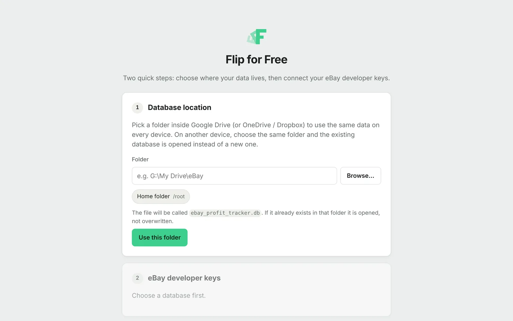
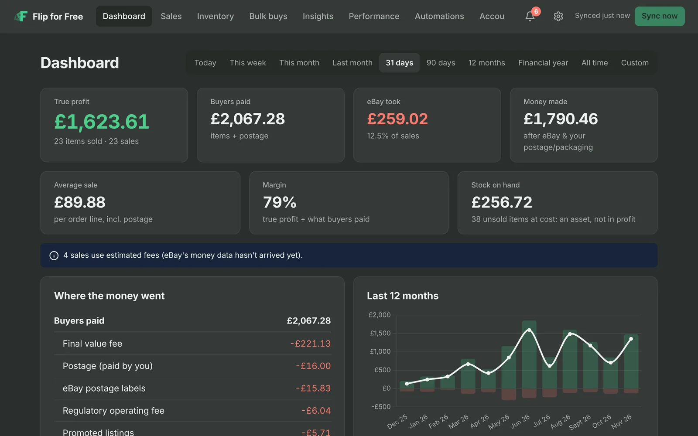
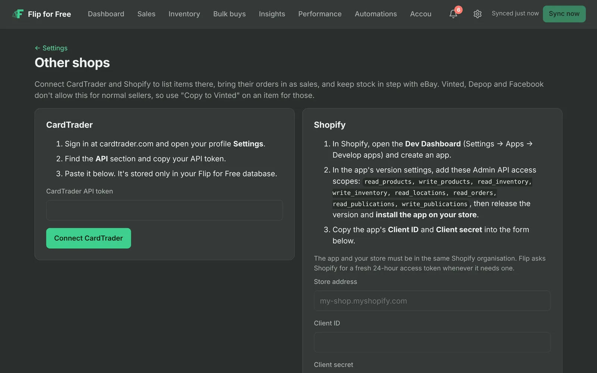

Flip for Free
Flip for FreeInstall Flip for Free
About 15 minutes, plus a one-off wait for eBay to approve your developer account. Everything is free, and your data stays on your own computer or server.
Before you start: an eBay developer account
Flip for Free signs in to eBay with your own free developer keys, so nobody else ever has access to your account. eBay checks new developer accounts by hand, so do this first:
- Register at developer.ebay.com (click Register) with the same details as your eBay seller account.
- Wait for the approval email. It usually takes about one working day, and you can't create keys until it arrives. If it's rejected, use eBay's developer support form to ask for a manual review.
While you wait, install the app below and explore it in demo mode.
Windows
- Install Python 3.10 or newer. On the first installer screen, tick Add python.exe to PATH.
- Download Flip for Free: on GitHub click Code → Download ZIP, then right-click the
zip and choose Extract All. Put the folder somewhere permanent, such as
Documents\Flip-For-Free. - Double-click
run.bat. The first run installs what it needs (a minute or two), then opens your browser. - If Windows Firewall asks, allow access on Private networks only. That's what lets your phone reach it on your home Wi-Fi.
Mac
- Install Python 3.10 or newer from python.org.
- Download the ZIP from GitHub (Code → Download ZIP) and double-click it to unzip.
Move the folder to
Documents. - Double-click
run.command. If macOS says it's from an unidentified developer, right-click it, choose Open, then Open again. You only need to do this once.
Linux
git clone https://github.com/JosephsStuff/Flip-For-Free.git
cd Flip-For-Free
./run.shNeeds Python 3.10+ with venv (on Ubuntu: sudo apt install python3-venv).
When it's running
The window prints two addresses and opens the first one:
On this computer: https://localhost:8765/
On other devices: https://192.168.1.23:8765/ (same Wi-Fi only; pair each device once)- The browser warns about the certificate the first time. That's expected: Flip makes its own certificate because eBay requires an https sign-in address. Choose Advanced → Proceed to localhost.
- Keep the window open while you use Flip for Free. Closing it stops the app; your data is safe in the database.
Connect your eBay account

- Choose where your data lives. Pick any folder. Use a Google Drive, OneDrive or Dropbox folder if you want
the same data on more than one computer. Flip creates
ebay_profit_tracker.dbthere. - Create a Production keyset at developer.ebay.com/my/keys. If it says the keyset is disabled, open the Marketplace account deletion notice and choose the exemption.
- Copy the three keys from the Production box into the fields with the same names: App ID (Client ID), Dev ID and Cert ID (Client Secret).
- Add a redirect. Next to the keyset: User Tokens → Get a Token from eBay via Your Application → Add eBay
Redirect URL. Set both Your auth accepted URL and Your auth declined URL to
https://localhost:8765/auth/callback(or your server's address +/auth/callback), tick OAuth Enabled and save. Copy the RuName: the short name in the first column, not a web address. - Sign in with eBay, agree, and you're back in Flip. The first sync starts straight away and looks back up to two years.
localhost address, use the small relay page in the
relay folder (see the README), or run Flip on a
free server, which has a real https address.
Docker
For Docker Desktop on Windows or Mac, or Docker on a NAS or Linux server:
git clone https://github.com/JosephsStuff/Flip-For-Free.git
cd Flip-For-Free
docker compose up -d --buildOpen https://localhost:8765. Forgotten the address? This works in PowerShell, Command Prompt, Mac
Terminal and Linux:
docker compose exec flip flip-address- Your data lives in
flip-datanext todocker-compose.yml. Back that folder up; rebuilding the container never touches it. - Only this computer can reach it. For other devices, put Tailscale on the Docker host, run
tailscale serve --bg 8765, and setFLIP_PUBLIC_URLindocker-compose.ymlto thehttps://….ts.netaddress.
A free server that's always on
Oracle Cloud's Always Free tier plus Tailscale runs Flip for Free 24/7, private to your own devices, at a real https address. One command installs everything, including automatic restarts and nightly backups:
curl -fsSL https://raw.githubusercontent.com/JosephsStuff/Flip-For-Free/main/deploy/install.sh | bashThe step-by-step Oracle guide covers creating the account, the network (create it with Oracle's VCN Wizard → Create VCN with Internet Connectivity first, so the server gets a public address), the server itself and Tailscale.
Use it on your phone
On the same Wi-Fi: open the other devices address on your phone, then pair it once from Settings → Use on your phone. Away from home: use the free server, or put Tailscale on your computer.

Connect CardTrader and Shopify (optional)
Settings → Other shops. CardTrader needs the API token from your CardTrader profile settings. Shopify needs an app from its Dev Dashboard with the listed access scopes, installed on your store. Then every item gets List on CardTrader and List on Shopify, and sales on any shop take the stock off the others.

Try it without an eBay account
python app.py --demoFills the app with a year of realistic fake sales, stock and bulk buys so you can look around. Nothing is saved and nothing touches eBay.
Updating
Settings → Updates → Update now downloads the latest version, backs up your database first and restarts. Or tick Install new versions automatically. Your data is never in the app folder, so updating can't lose it.
Something not working?
| Problem | Fix |
|---|---|
| "python is not recognised" on Windows | Reinstall Python and tick Add python.exe to PATH, then run run.bat again. |
| Browser says the connection isn't private | Expected on localhost: choose Advanced → Proceed. The certificate is made on your computer. |
| eBay sign-in says the redirect is invalid | The accepted and declined URLs must exactly match the address you opened Flip on, ending in /auth/callback, with OAuth Enabled ticked. |
| My phone can't open the other-devices address | It only works on the same Wi-Fi, and the Windows firewall must allow Python on private networks. |
| Anything else | The error page has Report this on GitHub, which opens a pre-filled issue with personal details removed. |